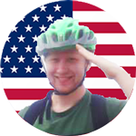
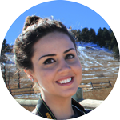
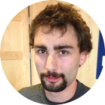

 Michael Asnes "Big Mike"
Michael Asnes is a computer software developer with interests in programming languages and big data systems. He enjoys interesting debugging problems and learning about the new technologies and programming languages that interest him. His favorite up and coming technology is Neovim -- an update to the Vim editor, which adds embed-ability and support for asynchronous plugins. Michael is pursuing a double major, with a Bachelor of Arts in both Computer Science and Philosophy. He appreciates philosophy for the insight it gives on the world, and as a structured tool for assessing ideas.
Brandon Mikulka "Brando"
Brandon Mikulka is a computer software developer with interests in big data systems and an art background. He loves learning new technologies and solving complicated problems by creating new workflows from pre-existing software. In addition to working on this project, Brandon spends his time expanding his knowledge of up and coming technologies, always trying to stay on the cutting edge. Brandon has an unusual background, first receiving his Bachelor of Arts in Film Studies from California State University Monterey Bay. He is currently working on a Bachelor of Science in Computer Science at University of Colorado at Boulder.
 Cassie Cladis "Late for the Bus"
Cassiane Cladis is a first year Masters student studying Information and Communication, Technology for Development. She holds a Bachelors of Science in International Affairs from the University of Colorado at Boulder. Cassie works for a local company in Denver as a Brand Manager and as a Teaching Assistant at CU-Boulder. She spends far too much of her income traveling.
John-Luke Bukavalas "JL"
John Luke Bucuvalas is currently wrapping up his final semester in pursuit of a Bachelors of Arts in Computer Science. Interested in new technologies, John Luke is always willing to get his hands dirty with a complex problem.
 Jacob Morales "Basketball"
Jacob Morales "Basketball"
Jacob Morales is currently in his second year at the University of Colorado Boulder working on his Bachelor of Science in Computer Science. He is yet to choose an area of emphasis in computer science, but is open to learning just about anything. Jacob is very passionate about sports and someday hopes to work at ESPN as an engineer. Outside of the computer science realm, Jacob’s favorite things to do are spend time with family and friends as well as watching or playing just about any game.
{% endblock %}